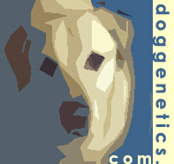

Liz Hare
Liz Hare
Dr. Hare got her BA from Bryn Mawr College and her PhD in Genetics (1998) from The George Washington University. She works primarily in dog / animal genetics; although, as a quantitative geneticist her statistical and computational methodology is quite sophisticated.
Dr. Hare is active in the MiR (Minorities in R) Community which aims to support historically underrepresented R users around the world.
Topics covered
Her computational language of choice is R, and much of her work has focused on open science with an eye toward inclusion and equity. In many software programs, the user has the ability to include alt text: text descriptions that convey the content and meaning to blind and low-vision readers.
you really need to tell us what the data is saying and why you included it.
- What kind of graph or chart is it?
- What variables are on the axes?
- What are the ranges of the variables?
- What does the appearance tell you about the relationships between the variables?
Relevant work
- L. Hare, Writing Alt Text to Communicate the Meaning in Data Visualizations, Do No Harm Guide: centering accessibility in data visualization, eds Schwabish, Popkin, Feng, Chapter 4, 2022.